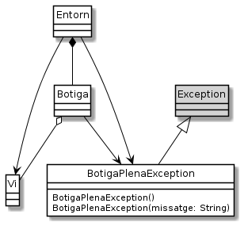

Exercici 05_09. Excepcions a la botiga de vins¶
Exercici 05_09. Excepcions a la botiga de vins¶
Context
Carpeta de lliurament:
05_09_botiga_excepcional/Continguts relacionats: Excepcions
Com lliurar-lo: instruccions
[✓] Exercici amb autoavaluació
Enunciat
La nostra aplicació està funcionant força bé. La Sra. Estrella està
contenta i ha començat a provar-la amb els seus clients. El Tomet no està
tant content perquè li ha tocat anar introduint tots els vins a
botiga.csv però, com dirien els savis «haber estudia’o».
Ara que tenim un moment de descans, és un bon moment per millorar el nostre codi.
Un dels punts febles del codi és la gestió d’errors. En concret, les
classes Vi i Botiga fan un cert abús del retorn de null cada
cop que troben un error. Alguns errors pot ser raonable gestionar-los així
però d’altres definitivament no.

Aquests són els errors que haurem de controlar amb excepcions a partir d’ara:
el constructor
Botiga(int maxVins), en comptes de posar el valor per defecte, llençarà una excepcióIllegalArgumentExceptionquan se li passi un valor menor que 1.El missatge que inclourà a l’excepció serà:
"No es pot crear una botiga amb menys d'un vi".el mètode
Botiga.elimina()llençarà l’excepcióIllegalArgumentExceptionquan rebi el valornullo bé una instància que no hi sigui a la botiga. Els missatges seran"El paràmetre vi no ha de rebre null","La instància a eliminar ha d'estar present".el mètode
Botiga.cerca()llençarà l’excepcióIllegalArgumentExceptionquan rebi el valornullcom a plantilla. El missatge serà"El paràmetre plantilla no ha de rebre null".el mètode
Botiga.afegeix()llençarà l’excepcióBotigaPlenaException. Es tracta d’una nova excepció que hem de crear, que heretarà directament deExceptioni que oferirà un constructor específic per determinar el missatge, i un per defecte que establirà com a missatge"Botiga plena".
Com que alguns d’aquests mètodes generaran excepcions gestionades, caldrà
modificar el codi de Entorn.
De moment ens quedarem aquí, doncs l’objectiu no és tant ser exhaustius com començar a introduir el mecanisme d’excepcions a la nostra aplicació. No adreçarem altres punts que també serien susceptibles introduir la gestió de les excepcions. Per exemple, els possibles problemes que poden aparèixer amb la manipulació de fitxers.